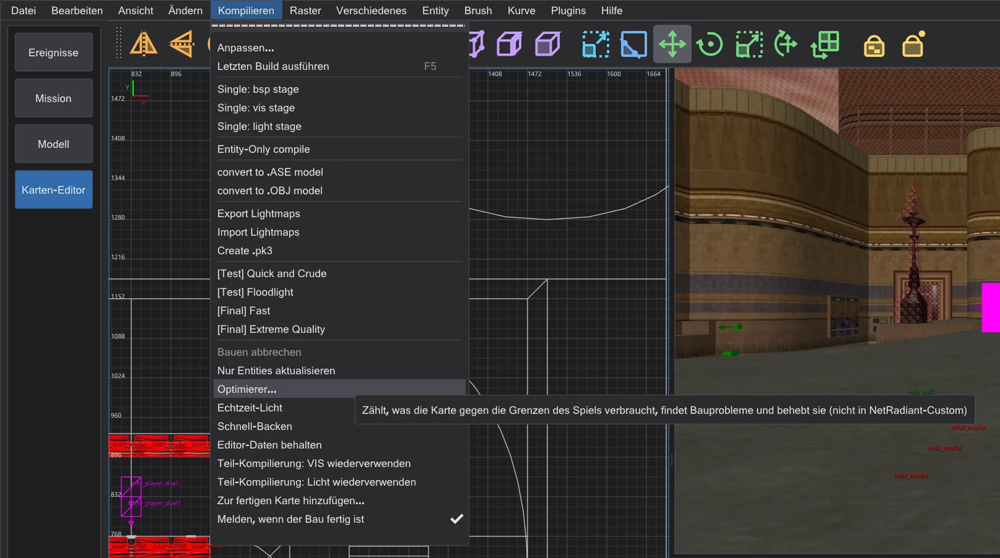
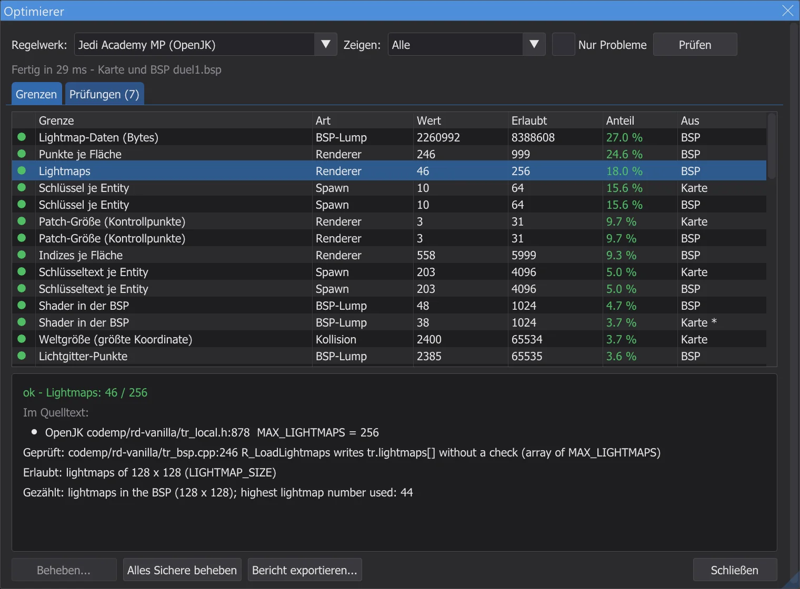
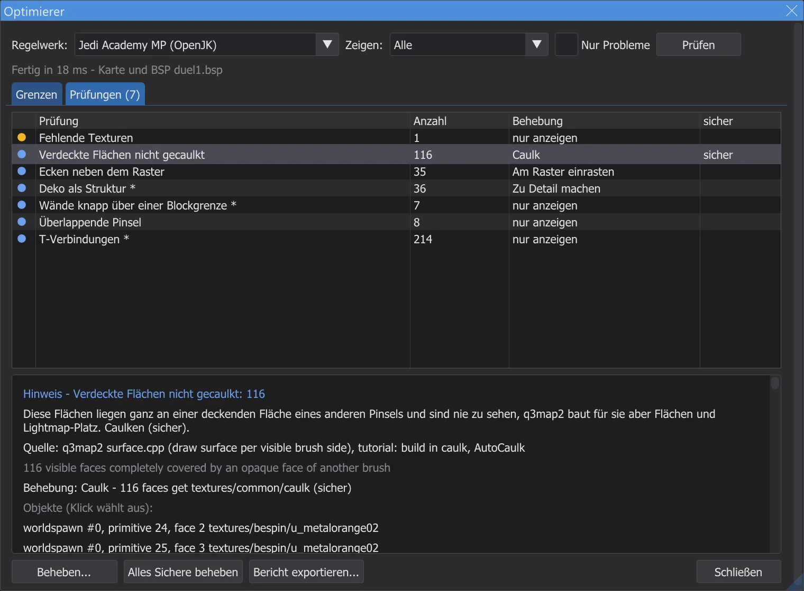
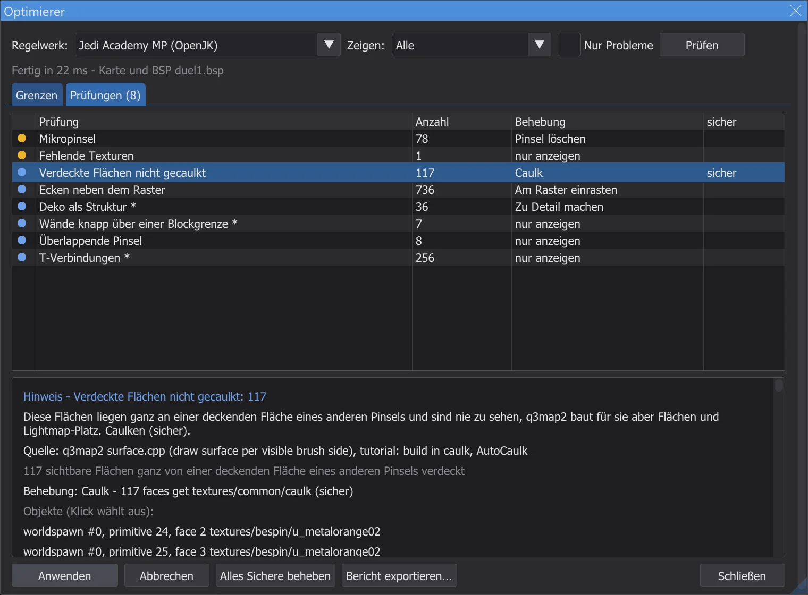
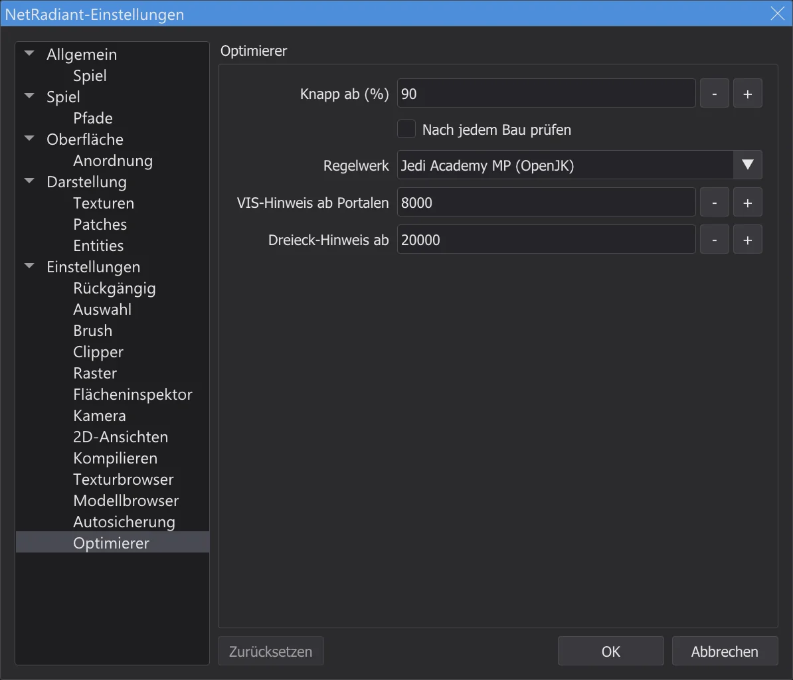

Karten-Editor: Optimierer und Grenzen
Kompilieren > Optimierer zählt, was die Karte verbraucht, gegen jede Grenze von Jedi Academy, Movie Duels und Jedi Outcast - jede Grenze aus dem Quelltext der Engine -, findet Bauprobleme wie Lecks, nicht gecaulkte verdeckte Flächen und Patches mit zu vielen Kollisionsebenen und behebt viele davon auf Knopfdruck.
Den Optimierer öffnen#

- 1
Kompilieren > Optimierer öffnet das Fenster Optimierer und prüft die Karte im Hintergrund - auch die größten Karten; der Editor bleibt währenddessen bedienbar. Am Ende steht eine Zusammenfassung in der Konsole.
- 2
Regelwerk: wählt die Grenzen: Automatisch nimmt das Spiel, mit dem der Editor arbeitet (Jedi Academy, Movie Duels oder Jedi Outcast); Jedi Academy Mehrspieler lässt sich ebenfalls wählen.
- 3
Wurde die Karte gebaut (siehe Karten-Editor: Karte bauen) oder als fertige Karte geöffnet (Karten-Editor: fertige Karten öffnen und ändern), wird die .bsp mitgeprüft: Lichtgitter, Lightmaps, Sichtbarkeit, Dreiecke je Ansicht, die Leck-Linie der letzten BSP-Stufe. Ohne .bsp wird nur die Karte gezählt.
- 4
Auf der Seite Optimierer der Einstellungen kann der Optimierer nach jedem Bau von selbst laufen; er geht nur auf, wenn es Probleme gibt.
Grenzen#

- ok - deutlich unter der Grenze. knapp - ab 90 % davon (einstellbar). über - über einer Grenze, die das Spiel durchsetzt: die Karte lädt nicht, stürzt ab oder verliert etwas.
- Hinweis - eine Formatgrenze der .bsp-Datei (
MAX_MAP_*inqfiles.h), die weder die Engine noch q3map2 prüft. Ravens eigene Karten überschreiten mehrere davon, deshalb nennt der Optimierer sie nie „über“ - er weist nur darauf hin. - Mit * markierte Werte sind Schätzungen (zum Beispiel die Entities, die nach dem Spawnen bleiben, oder was ein Modell kostet). Die Spalte Aus sagt, ob ein Wert in der Karte oder in der .bsp gezählt wurde.
- Ein Klick auf eine Grenze wählt die größten Verbraucher in der Karte und zentriert die Ansichten auf sie.
code/, Mehrspieler codemp/), der Quelltext von Movie Duels für Movie Duels, OpenJK mit JK2_MODE und codeJK2/ für Jedi Outcast. Wo ein Mod eine Grenze anhebt, prüft der Optimierer trotzdem gegen den strengeren Vanilla-Wert (zum Beispiel 2048 statt 4096 Patch-Ebenen). Die Tabellen am Ende der Seite nennen jede Grenze mit Datei und Zeile; der Test karte_grenzen liest diese Zeilen erneut aus den Quellen.Prüfungen und Behebungen#

- 1
Ein Klick auf einen Befund wählt seine Objekte und zentriert die 2D-Ansichten und die Kamera auf sie.
- 2
Beheben zeigt, was sich ändern würde; Anwenden tut es. Jede Behebung ist ein Schritt im Rückgängig, danach wird die Karte neu gezählt - der Befund verschwindet oder wird kleiner.

Die Vorschau einer Behebung, bevor sie angewendet wird. - 3
Alles Sichere beheben wendet nur die als sicher markierten Behebungen an - die, die weder Aussehen noch Spiel der Karte ändern können - in einem einzigen Rückgängig-Schritt.
- 4
Behebungen, die einen worldspawn-Schlüssel setzen (Lichtgitter, Lightmaps), wirken mit dem nächsten Bau; die Konsole sagt es. Bericht exportieren schreibt alles samt Quellen in eine Textdatei.

| Prüfung | Was es bedeutet | Behebung | Sicher |
|---|---|---|---|
| Leck | Die Karte ist nicht dicht: q3map2 fand einen Weg von einer Entity in die Leere (Leck-Linie). VIS und Licht brauchen eine geschlossene Hülle. Das Leck mit Datei > Pointfile zeigen und die Lücke schließen | nur anzeigen | - |
| Detail-Pinsel an der Leck-Linie | Detail-Pinsel dichten die Karte nicht ab. Die Leck-Linie läuft durch diese - zu Struktur machen oder dahinter abdichten | Zu Struktur machen | - |
| Verdeckte Flächen nicht gecaulkt | Diese Flächen liegen ganz an einem anderen Pinsel, dessen Seiten alle gezeichnet und undurchsichtig sind (kein Glas, keine caulk- oder nodraw-Seite, keine Werkzeug-Textur), und sind nie zu sehen, q3map2 baut für sie aber Flächen und Lightmap-Platz. Caulken (sicher) | Caulk | sicher |
| Entartete Pinsel | Pinsel ohne gültige Form. q3map2 lässt sie fallen; sie stören nur. Löschen (sicher) | Pinsel löschen | sicher |
| Mikropinsel | Pinsel dünner als eine Einheit verursachen Genauigkeitsprobleme und Schnitte im BSP. Löschen oder dicker machen | Pinsel löschen | - |
| Ecken neben dem Raster | Pinselecken neben ganzen Einheiten führen zu Rissen und Funkeln, wenn q3map2 die Ebenen rundet. Am 1er-Raster einrasten (sicher, wenn es nur Rundungsrauschen ist) | Am Raster einrasten | sicher |
| Hint oder Areaportal als Detail | Hint- und Areaportal-Pinsel müssen Struktur sein; q3map2 warnt „Mixed detail and structural“ und nimmt ohnehin Struktur. Zu Struktur machen (sicher) | Zu Struktur machen | sicher |
| Areaportal in einer Entity | q3map2 erlaubt Areaportale nur in der Welt („areaportals only allowed in world“) und lässt sie weg. Den Pinsel nach worldspawn verschieben | nur anzeigen | - |
| Deko als Struktur | Kleine, dünne oder schräge Strukturpinsel zerschneiden den BSP in viele Blätter und Portale (langsames VIS). Vorschlag: zu Detail machen - aber nie Pinsel, die die Karte abdichten | Zu Detail machen | - |
| Wände knapp über einer Blockgrenze | q3map2 schneidet den BSP an jeder _blocksize-Grenze (1024). Eine Wand, die nur wenig darüber ragt, bringt zusätzliche Schnitte - an der Grenze ausrichten | nur anzeigen | - |
| Überlappende Pinsel | Überlappende Pinsel verursachen Z-Fighting und doppelte Flächen. Wände auf Gehrung schneiden (Clipper, CSG) statt sie zu überlappen | nur anzeigen | - |
| T-Verbindungen | Eine Ecke liegt in der Kante eines anderen Pinsels. q3map2 behebt das mit zusätzlichen Punkten (mehr Punkte je Fläche); wo es zählt, die Pinsel angleichen | nur anzeigen | - |
| Patch an den Kollisionsgrenzen | Die Engine baut für jeden Patch Kollisionsebenen und -facetten; über MAX_PATCH_PLANES (Vanilla 2048) oder MAX_FACETS lädt die Karte nicht. Den Patch teilen (bobToolz Split patch) | Patch teilen | - |
| Patch-Gitter läuft über | Dieser Patch wird in mehr als 129 Gitterspalten unterteilt; die Engine schreibt hinter ihr Gitter (Speicherfehler). Den Patch teilen oder flacher machen | Patch teilen | - |
| Clip-Modelle | misc_model mit Clip-Flags lässt q3map2 je Dreieck einen Pinsel bauen (viele Pinsel und Ebenen). Ein paar physics_clip-Pinsel sind meist besser | nur anzeigen | - |
| Fehlende Texturen | Für diese Namen gibt es weder Shader noch Bild - das Spiel zeigt die Ersatztextur. Vorhandene Texturen wählen oder sie dem Mod beilegen | nur anzeigen | - |
| Brush-Entity ohne Pinsel | Das Spiel bricht mit „SV_SetBrushModel: NULL“ ab. Der Entity Pinsel geben oder sie löschen | Entities löschen | - |
| Lichtgitter kaputt | Das Lichtgitter ist voll oder passt nicht: Zellen zeigen hinter das Gitter, Entities bekommen falsches oder kein Licht. Einen größeren worldspawn-„gridsize“ setzen und neu belichten | worldspawn-Schlüssel setzen | - |
| Zu viele Lightmaps | Der Renderer hält 256 Lightmaps; knapp davor oder darüber worldspawn „_lightmapscale“ höher setzen (gröbere Lightmaps) und neu belichten | worldspawn-Schlüssel setzen | - |
| Teures VIS | Viele Portale machen VIS langsam (Passage Portal Flow). Deko zu Detail machen, Hint-Pinsel setzen, _blocksize erhöhen | nur anzeigen | - |
| Viele Dreiecke je Ansicht (Schätzung) | Geschätzt aus dem PVS des schlimmsten Clusters (ohne Sichtkegel): höchstens das, was r_speeds zeigen würde. Sichtlinien mit Wänden, Hint-Pinseln oder Areaportalen unterbrechen | nur anzeigen | - |
| Spawnpunkt im Festen | Dieser Spawnpunkt oder NPC-Spawner liegt im Festen oder außerhalb der Karte (kein Cluster). In den spielbaren Bereich verschieben | nur anzeigen | - |
| Brush-Modelle zusammenlegen | Die Brush-Modelle sind nahe an MAX_SUBMODELS. Brush-Entities mit genau gleichen Schlüsseln und ohne targetname können ein Modell werden | Brush-Modelle zusammenlegen | - |
| Modell wird nie gezeichnet (misc_model_static) | Das Spiel zeichnet ein misc_model_static nur, wenn der Punkt origin + (0 0 zoffset+1) im Freien liegt. Hier liegt er im Festen, das Modell erscheint nie (OpenJK#1358). Behebung: ein zoffset, der nur diesen Prüfpunkt aus dem Festen holt; das Modell bleibt, wo es ist | Entity-Schlüssel setzen | - |
| common/origin statt system/origin | Jedi Academy und Jedi Outcast kennen als Ursprungs-Pinsel nur textures/system/origin. Mit common/origin baut q3map2 einen normalen Pinsel, und die Entity landet bei 0 0 0 (NRC#270). Behebung: die Textur durch system/origin ersetzen | Textur ersetzen | - |
| Riesige Pinsel | Sehr große Pinsel - etwa eine Skybox aus wenigen Riesenpinseln - verlieren in q3map2 an Genauigkeit und können lecken (GtkRadiant#271). Die Hülle aus kleineren Pinseln bauen | nur anzeigen | - |
| Flächenlicht unter festen Pinseln | q3map2 lässt jede leuchtende Fläche (Lava, Lichtplatten) auch von einer Kopie 23 Einheiten davor strahlen (Backsplash). Liegt ein fester Pinsel näher, erscheint dieses Licht auf seiner anderen Seite - Licht scheint durch den Boden (GL#189, NRC#144). Den Pinsel weiter weg setzen, die Lichtfläche kürzen oder im Shader q3map_backsplash 0 0 setzen | nur anzeigen | - |
| Bau-Schalter, die dieses Spiel nicht kann | Externe Lightmaps (-external oder -lightmapsize ungleich 128) gehen in Jedi Outcast nicht (NRC#98) und in keinem Spiel zusammen mit Lichtstilen (NRC#48). Das Build-Menü verweigert solche Einträge; den Schalter unter Kompilieren > Anpassen entfernen | nur anzeigen | - |
| Externe Lightmaps durch Shader | Ein Shader mit q3map_lightmapSize ungleich 128 bekommt eine externe Lightmap. In Jedi Academy und Movie Duels verlieren Lichtstile auf diesen Flächen dann ihre Lightmap-Stufen (NRC#48, eine Grenze von q3map2 bei RBSP); Jedi Outcast kann externe Lightmaps überhaupt nicht laden (NRC#98). q3map_lightmapSize aus dem Shader nehmen oder bei diesen Flächen keine Lichtstile (schaltbare oder flackernde Lichter) verwenden | nur anzeigen | - |
Einstellungen#

Knapp ab (%) legt fest, ab welchem Anteil eine Grenze als knapp gilt, Nach jedem Bau prüfen lässt den Optimierer nach jedem Bau laufen, Regelwerk legt das Regelwerk fest, VIS-Hinweis ab Portalen und Dreieck-Hinweis ab sind die Schwellen für die Hinweise zu VIS und Dreiecken.
Die Grenzen je Spiel#
Erlaubt ist der Wert, gegen den der Optimierer prüft - eins weniger als das Define, wo die Engine selbst einen Platz belegt (zum Beispiel das Weltmodell oder das Box-Modell), und der strengere Vanilla-Wert, wo ein Mod ihn angehoben hat. Die Spalte Quelle nennt jede Stelle: das Define und die Zeile, die das Spiel anhält.
Jedi Academy (OpenJK SP)
| Grenze | Im Quelltext | Erlaubt | Art | Überschritten | Quelle (Datei:Zeile) |
|---|---|---|---|---|---|
| Entities in der BSP | MAX_MAP_ENTITIES = 2048 | 2048 | BSP-Lump | Hinweis | OpenJK code/qcommon/qfiles.h:214 MAX_MAP_ENTITIES |
| Entity-Text (Bytes) | MAX_MAP_ENTSTRING = 262144 | 262144 | BSP-Lump | Hinweis | OpenJK code/qcommon/qfiles.h:215 MAX_MAP_ENTSTRING |
| Shader in der BSP | MAX_MAP_SHADERS = 1024 | 1024 | BSP-Lump | Hinweis | OpenJK code/qcommon/qfiles.h:216 MAX_MAP_SHADERS |
| Modelle in der BSP | MAX_MAP_MODELS = 1024 | 1024 | BSP-Lump | Hinweis | OpenJK code/qcommon/qfiles.h:212 MAX_MAP_MODELS |
| Pinsel | MAX_MAP_BRUSHES = 32768 | 32768 | BSP-Lump | Hinweis | OpenJK code/qcommon/qfiles.h:213 MAX_MAP_BRUSHES |
| Pinselseiten | MAX_MAP_BRUSHSIDES = 131072 | 131072 | BSP-Lump | Hinweis | OpenJK code/qcommon/qfiles.h:222 MAX_MAP_BRUSHSIDES |
| Ebenen | MAX_MAP_PLANES = 131072 | 131072 | BSP-Lump | Hinweis | OpenJK code/qcommon/qfiles.h:220 MAX_MAP_PLANES |
| BSP-Knoten | MAX_MAP_NODES = 131072 | 131072 | BSP-Lump | Hinweis | OpenJK code/qcommon/qfiles.h:221 MAX_MAP_NODES |
| Blätter | MAX_MAP_LEAFS = 131072 | 131072 | BSP-Lump | Hinweis | OpenJK code/qcommon/qfiles.h:223 MAX_MAP_LEAFS |
| Blattflächen | MAX_MAP_LEAFFACES = 131072 | 131072 | BSP-Lump | Hinweis | OpenJK code/qcommon/qfiles.h:224 MAX_MAP_LEAFFACES |
| Blattpinsel | MAX_MAP_LEAFBRUSHES = 262144 | 262144 | BSP-Lump | Hinweis | OpenJK code/qcommon/qfiles.h:225 MAX_MAP_LEAFBRUSHES |
| Zeichenflächen | MAX_MAP_DRAW_SURFS = 131072 | 131072 | BSP-Lump | Hinweis | OpenJK code/qcommon/qfiles.h:233 MAX_MAP_DRAW_SURFS |
| Zeichenpunkte | MAX_MAP_DRAW_VERTS = 524288 | 524288 | BSP-Lump | Hinweis | OpenJK code/qcommon/qfiles.h:234 MAX_MAP_DRAW_VERTS |
| Zeichenindizes | MAX_MAP_DRAW_INDEXES = 524288 | 524288 | BSP-Lump | Hinweis | OpenJK code/qcommon/qfiles.h:235 MAX_MAP_DRAW_INDEXES |
| Nebel in der BSP | MAX_MAP_FOGS = 256 | 256 | BSP-Lump | Hinweis | OpenJK code/qcommon/qfiles.h:219 MAX_MAP_FOGS |
| Lightmap-Daten (Bytes) | MAX_MAP_LIGHTING = 8388608 | 8388608 | BSP-Lump | Hinweis | OpenJK code/qcommon/qfiles.h:227 MAX_MAP_LIGHTING |
| Sichtdaten (Bytes) | MAX_MAP_VISIBILITY = 4194304 | 4194304 | BSP-Lump | Hinweis | OpenJK code/qcommon/qfiles.h:231 MAX_MAP_VISIBILITY |
| Portale | MAX_MAP_PORTALS = 131072 | 131072 | BSP-Lump | Hinweis | OpenJK code/qcommon/qfiles.h:226 MAX_MAP_PORTALS |
| Lichtgitter-Punkte | MAX_MAP_LIGHTGRID = 65535 | 65535 | BSP-Lump | über | OpenJK code/qcommon/qfiles.h:228 MAX_MAP_LIGHTGRID; q3map2 tools/quake3/q3map2/bspfile_rbsp.cpp:82 MAX_MAP_GRID |
| Lichtgitter-Zellen | MAX_MAP_LIGHTGRID_ARRAY = 1048576 | 1048576 | BSP-Lump | Hinweis | OpenJK code/qcommon/qfiles.h:229 MAX_MAP_LIGHTGRID_ARRAY; q3map2 tools/quake3/q3map2/q3map2.h:210 MAX_MAP_LIGHTGRID |
| Areas | MAX_MAP_AREAS = 256 | 256 | BSP-Lump | über | OpenJK code/qcommon/qfiles.h:218 MAX_MAP_AREAS; OpenJK code/qcommon/q_shared.h:228 MAX_MAP_AREA_BYTES; q3map2 tools/quake3/q3map2/q3map2.h:203 MAX_MAP_AREAS |
| Punkte je Fläche | SHADER_MAX_VERTEXES = 1000 | 999 | Renderer | über | OpenJK code/qcommon/qfiles.h:33 SHADER_MAX_VERTEXES; q3map2 tools/quake3/q3map2/games.cpp:756 |
| Indizes je Fläche | SHADER_MAX_INDEXES = 6000 | 5999 | Renderer | über | OpenJK code/qcommon/qfiles.h:34 SHADER_MAX_INDEXES |
| Lightmaps | MAX_LIGHTMAPS = 256 | 256 | Renderer | über | OpenJK code/rd-vanilla/tr_local.h:843 MAX_LIGHTMAPS |
| Nebel (Sortierbits) | QSORT_FOGNUM_SHIFT = 30 | 30 | Renderer | über | OpenJK code/rd-vanilla/tr_local.h:874 QSORT_FOGNUM_SHIFT; OpenJK code/rd-vanilla/tr_local.h:875 QSORT_REFENTITYNUM_SHIFT; q3map2 tools/quake3/q3map2/q3map2.h:206 MAX_RBSP_FOGS |
| Patch-Größe (Kontrollpunkte) | MAX_PATCH_SIZE = 32 | 31 | Renderer | über | OpenJK code/rd-vanilla/tr_local.h:592 MAX_PATCH_SIZE; q3map2 tools/quake3/q3map2/q3map2.h:126 MAX_PATCH_SIZE |
| Flächen je Ansicht (Schätzung) | MAX_DRAWSURFS = 65536 | 65536 | Renderer | über | OpenJK code/rd-vanilla/tr_local.h:847 MAX_DRAWSURFS |
| Geladene Shader | MAX_SHADERS = 8192 | 8192 | Renderer | über | OpenJK code/rd-vanilla/tr_local.h:43 SHADERNUM_BITS; OpenJK code/rd-vanilla/tr_local.h:44 MAX_SHADERS |
| Geladene Skins | MAX_SKINS = 512 | 512 | Renderer | über | OpenJK code/rd-vanilla/tr_local.h:844 MAX_SKINS |
| Brush-Modelle (mit Welt) | MAX_SUBMODELS = 512 | 511 | Kollision | über | OpenJK code/qcommon/q_shared.h:642 MAX_SUBMODELS; OpenJK code/qcommon/cm_local.h:31 BOX_MODEL_HANDLE |
| Kollisionsebenen je Patch | MAX_PATCH_PLANES = 4096 | 2048 | Kollision | über | OpenJK code/qcommon/cm_patch.h:65 MAX_PATCH_PLANES |
| Kollisionsfacetten je Patch | MAX_FACETS = 1024 | 1024 | Kollision | über | OpenJK code/qcommon/cm_patch.h:64 MAX_FACETS |
| Kontrollpunkte je Patch | MAX_PATCH_VERTS = 1024 | 1024 | Kollision | über | OpenJK code/qcommon/cm_load.cpp:527 MAX_PATCH_VERTS |
| Weltgröße (größte Koordinate) | MAX_MAP_BOUNDS = 65535 | 65534 | Kollision | über | OpenJK code/qcommon/cm_polylib.h:44 MAX_MAP_BOUNDS; OpenJK code/qcommon/q_shared.h:802 MAX_WORLD_COORD; q3map2 tools/quake3/common/maxworld.h:4 MAX_WORLD_COORD |
| Entities nach dem Spawn | MAX_GENTITIES = 1024 | 1021 | Laufzeit | über | OpenJK code/qcommon/q_shared.h:621 GENTITYNUM_BITS; OpenJK code/qcommon/q_shared.h:618 MAX_CLIENTS |
| misc_model_static (cgame-Objekte) | MAX_MISC_ENTS = 2000 | 2000 | Laufzeit | über | OpenJK code/cgame/cg_main.cpp:1949 MAX_MISC_ENTS |
| Modelle (Configstrings) | MAX_MODELS = 256 | 255 | Laufzeit | über | OpenJK code/qcommon/q_shared.h:632 MAX_MODELS |
| Klänge (Configstrings) | MAX_SOUNDS = 380 | 379 | Laufzeit | über | OpenJK code/qcommon/q_shared.h:637 MAX_SOUNDS |
| Effekte (Configstrings) | MAX_FX = 128 | 127 | Laufzeit | über | OpenJK code/qcommon/q_shared.h:644 MAX_FX |
| Welteffekte (Regen, Schnee, Wind) | MAX_WORLD_FX = 66 | 65 | Laufzeit | über | OpenJK code/qcommon/q_shared.h:649 MAX_WORLD_FX |
| Configstring-Text (Untergrenze) | MAX_GAMESTATE_CHARS = 16000 | 16000 | Laufzeit | über | OpenJK code/qcommon/q_shared.h:730 MAX_GAMESTATE_CHARS |
| ROFF-Dateien | MAX_ROFFS = 128 | 128 | Laufzeit | über | OpenJK code/game/g_roff.h:34 MAX_ROFFS |
| NPC-Modelle je Level | MAX_MODELS_PER_LEVEL = 60 | 60 | Laufzeit | über | OpenJK code/game/NPC_stats.cpp:43 MAX_MODELS_PER_LEVEL |
| Unter-BSPs (misc_bsp) | MAX_SUB_BSP = 32 | 31 | Laufzeit | über | OpenJK code/qcommon/q_shared.h:640 MAX_SUB_BSP |
| Schlüssel je Entity | MAX_SPAWN_VARS = 64 | 64 | Spawn | über | OpenJK code/game/g_local.h:221 MAX_SPAWN_VARS |
| Schlüsseltext je Entity | MAX_SPAWN_VARS_CHARS = 2048 | 2048 | Spawn | über | OpenJK code/game/g_local.h:222 MAX_SPAWN_VARS_CHARS |
| Schaltbare Lichtstile | MAX_SWITCHED_LIGHTS = 32 | 32 | Compiler (q3map2) | über | q3map2 tools/quake3/q3map2/q3map2.h:193 MAX_SWITCHED_LIGHTS |
| Sichtdaten (q3map2) | MAX_MAP_VISIBILITY = 33554440 | 33554440 | Compiler (q3map2) | über | q3map2 tools/quake3/q3map2/q3map2.h:147 VIS_HEADER_SIZE; q3map2 tools/quake3/q3map2/q3map2.h:211 MAX_MAP_VISCLUSTERS; q3map2 tools/quake3/q3map2/q3map2.h:212 MAX_MAP_VISIBILITY |
Jedi Academy MP (OpenJK)
| Grenze | Im Quelltext | Erlaubt | Art | Überschritten | Quelle (Datei:Zeile) |
|---|---|---|---|---|---|
| Entities in der BSP | MAX_MAP_ENTITIES = 2048 | 2048 | BSP-Lump | Hinweis | OpenJK codemp/qcommon/qfiles.h:316 MAX_MAP_ENTITIES |
| Entity-Text (Bytes) | MAX_MAP_ENTSTRING = 262144 | 262144 | BSP-Lump | Hinweis | OpenJK codemp/qcommon/qfiles.h:317 MAX_MAP_ENTSTRING |
| Shader in der BSP | MAX_MAP_SHADERS = 1024 | 1024 | BSP-Lump | Hinweis | OpenJK codemp/qcommon/qfiles.h:318 MAX_MAP_SHADERS |
| Modelle in der BSP | MAX_MAP_MODELS = 1024 | 1024 | BSP-Lump | Hinweis | OpenJK codemp/qcommon/qfiles.h:314 MAX_MAP_MODELS |
| Pinsel | MAX_MAP_BRUSHES = 32768 | 32768 | BSP-Lump | Hinweis | OpenJK codemp/qcommon/qfiles.h:315 MAX_MAP_BRUSHES |
| Pinselseiten | MAX_MAP_BRUSHSIDES = 131072 | 131072 | BSP-Lump | Hinweis | OpenJK codemp/qcommon/qfiles.h:324 MAX_MAP_BRUSHSIDES |
| Ebenen | MAX_MAP_PLANES = 131072 | 131072 | BSP-Lump | Hinweis | OpenJK codemp/qcommon/qfiles.h:322 MAX_MAP_PLANES |
| BSP-Knoten | MAX_MAP_NODES = 131072 | 131072 | BSP-Lump | Hinweis | OpenJK codemp/qcommon/qfiles.h:323 MAX_MAP_NODES |
| Blätter | MAX_MAP_LEAFS = 131072 | 131072 | BSP-Lump | Hinweis | OpenJK codemp/qcommon/qfiles.h:325 MAX_MAP_LEAFS |
| Blattflächen | MAX_MAP_LEAFFACES = 131072 | 131072 | BSP-Lump | Hinweis | OpenJK codemp/qcommon/qfiles.h:326 MAX_MAP_LEAFFACES |
| Blattpinsel | MAX_MAP_LEAFBRUSHES = 262144 | 262144 | BSP-Lump | Hinweis | OpenJK codemp/qcommon/qfiles.h:327 MAX_MAP_LEAFBRUSHES |
| Zeichenflächen | MAX_MAP_DRAW_SURFS = 131072 | 131072 | BSP-Lump | Hinweis | OpenJK codemp/qcommon/qfiles.h:334 MAX_MAP_DRAW_SURFS |
| Zeichenpunkte | MAX_MAP_DRAW_VERTS = 524288 | 524288 | BSP-Lump | Hinweis | OpenJK codemp/qcommon/qfiles.h:335 MAX_MAP_DRAW_VERTS |
| Zeichenindizes | MAX_MAP_DRAW_INDEXES = 524288 | 524288 | BSP-Lump | Hinweis | OpenJK codemp/qcommon/qfiles.h:336 MAX_MAP_DRAW_INDEXES |
| Nebel in der BSP | MAX_MAP_FOGS = 256 | 256 | BSP-Lump | Hinweis | OpenJK codemp/qcommon/qfiles.h:321 MAX_MAP_FOGS |
| Lightmap-Daten (Bytes) | MAX_MAP_LIGHTING = 8388608 | 8388608 | BSP-Lump | Hinweis | OpenJK codemp/qcommon/qfiles.h:329 MAX_MAP_LIGHTING |
| Sichtdaten (Bytes) | MAX_MAP_VISIBILITY = 6291456 | 6291456 | BSP-Lump | Hinweis | OpenJK codemp/qcommon/qfiles.h:332 MAX_MAP_VISIBILITY |
| Portale | MAX_MAP_PORTALS = 131072 | 131072 | BSP-Lump | Hinweis | OpenJK codemp/qcommon/qfiles.h:328 MAX_MAP_PORTALS |
| Lichtgitter-Punkte | MAX_MAP_LIGHTGRID = 65535 | 65535 | BSP-Lump | über | OpenJK codemp/qcommon/qfiles.h:330 MAX_MAP_LIGHTGRID; q3map2 tools/quake3/q3map2/bspfile_rbsp.cpp:82 MAX_MAP_GRID |
| Lichtgitter-Zellen | MAX_MAP_LIGHTGRID_ARRAY = 1048576 | 1048576 | BSP-Lump | Hinweis | OpenJK codemp/qcommon/qfiles.h:331 MAX_MAP_LIGHTGRID_ARRAY; q3map2 tools/quake3/q3map2/q3map2.h:210 MAX_MAP_LIGHTGRID |
| Areas | MAX_MAP_AREAS = 256 | 256 | BSP-Lump | über | OpenJK codemp/qcommon/qfiles.h:320 MAX_MAP_AREAS; OpenJK codemp/qcommon/q_shared.h:222 MAX_MAP_AREA_BYTES; q3map2 tools/quake3/q3map2/q3map2.h:203 MAX_MAP_AREAS |
| Punkte je Fläche | SHADER_MAX_VERTEXES = 1000 | 999 | Renderer | über | OpenJK codemp/qcommon/qfiles.h:34 SHADER_MAX_VERTEXES; q3map2 tools/quake3/q3map2/games.cpp:756 |
| Indizes je Fläche | SHADER_MAX_INDEXES = 6000 | 5999 | Renderer | über | OpenJK codemp/qcommon/qfiles.h:35 SHADER_MAX_INDEXES |
| Lightmaps | MAX_LIGHTMAPS = 256 | 256 | Renderer | über | OpenJK codemp/rd-vanilla/tr_local.h:878 MAX_LIGHTMAPS |
| Nebel (Sortierbits) | QSORT_FOGNUM_SHIFT = 30 | 30 | Renderer | über | OpenJK codemp/rd-vanilla/tr_local.h:897 QSORT_FOGNUM_SHIFT; OpenJK codemp/rd-vanilla/tr_local.h:898 QSORT_REFENTITYNUM_SHIFT; q3map2 tools/quake3/q3map2/q3map2.h:206 MAX_RBSP_FOGS |
| Patch-Größe (Kontrollpunkte) | MAX_PATCH_SIZE = 32 | 31 | Renderer | über | OpenJK codemp/rd-vanilla/tr_local.h:648 MAX_PATCH_SIZE; q3map2 tools/quake3/q3map2/q3map2.h:126 MAX_PATCH_SIZE |
| Flächen je Ansicht (Schätzung) | MAX_DRAWSURFS = 65536 | 65536 | Renderer | über | OpenJK codemp/rd-vanilla/tr_local.h:882 MAX_DRAWSURFS |
| Geladene Shader | MAX_SHADERS = 16384 | 16384 | Renderer | über | OpenJK codemp/rd-vanilla/tr_local.h:40 SHADERNUM_BITS; OpenJK codemp/rd-vanilla/tr_local.h:41 MAX_SHADERS |
| Geladene Skins | MAX_SKINS = 1024 | 1024 | Renderer | über | OpenJK codemp/rd-vanilla/tr_local.h:879 MAX_SKINS |
| Brush-Modelle (mit Welt) | MAX_SUBMODELS = 512 | 510 | Kollision | über | OpenJK codemp/qcommon/cm_local.h:30 MAX_SUBMODELS; OpenJK codemp/qcommon/cm_local.h:31 BOX_MODEL_HANDLE |
| Kollisionsebenen je Patch | MAX_PATCH_PLANES = 4096 | 2048 | Kollision | über | OpenJK codemp/qcommon/cm_patch.h:67 MAX_PATCH_PLANES |
| Kollisionsfacetten je Patch | MAX_FACETS = 1024 | 1024 | Kollision | über | OpenJK codemp/qcommon/cm_patch.h:66 MAX_FACETS |
| Kontrollpunkte je Patch | MAX_PATCH_VERTS = 1024 | 1024 | Kollision | über | OpenJK codemp/qcommon/cm_load.cpp:519 MAX_PATCH_VERTS |
| Weltgröße (größte Koordinate) | MAX_MAP_BOUNDS = 65535 | 65534 | Kollision | über | OpenJK codemp/qcommon/cm_polylib.h:44 MAX_MAP_BOUNDS; OpenJK codemp/qcommon/q_shared.h:54 MAX_WORLD_COORD; q3map2 tools/quake3/common/maxworld.h:4 MAX_WORLD_COORD |
| Entities nach dem Spawn | MAX_GENTITIES = 1024 | 990 | Laufzeit | über | OpenJK codemp/qcommon/q_shared.h:895 GENTITYNUM_BITS; OpenJK codemp/qcommon/q_shared.h:890 MAX_CLIENTS |
| Modelle (Configstrings) | MAX_MODELS = 512 | 511 | Laufzeit | über | OpenJK codemp/qcommon/q_shared.h:920 MAX_MODELS |
| Klänge (Configstrings) | MAX_SOUNDS = 256 | 255 | Laufzeit | über | OpenJK codemp/qcommon/q_shared.h:921 MAX_SOUNDS |
| Effekte (Configstrings) | MAX_FX = 64 | 63 | Laufzeit | über | OpenJK codemp/qcommon/q_shared.h:923 MAX_FX |
| Configstring-Text (Untergrenze) | MAX_GAMESTATE_CHARS = 16000 | 16000 | Laufzeit | über | OpenJK codemp/qcommon/q_shared.h:946 MAX_GAMESTATE_CHARS |
| Unter-BSPs (misc_bsp) | MAX_SUB_BSP = 32 | 32 | Laufzeit | über | OpenJK codemp/qcommon/q_shared.h:925 MAX_SUB_BSP |
| Schlüssel je Entity | MAX_SPAWN_VARS = 64 | 64 | Spawn | über | OpenJK codemp/game/bg_public.h:36 MAX_SPAWN_VARS |
| Schlüsseltext je Entity | MAX_SPAWN_VARS_CHARS = 4096 | 4096 | Spawn | über | OpenJK codemp/game/bg_public.h:37 MAX_SPAWN_VARS_CHARS |
| Schaltbare Lichtstile | MAX_SWITCHED_LIGHTS = 32 | 32 | Compiler (q3map2) | über | q3map2 tools/quake3/q3map2/q3map2.h:193 MAX_SWITCHED_LIGHTS |
| Sichtdaten (q3map2) | MAX_MAP_VISIBILITY = 33554440 | 33554440 | Compiler (q3map2) | über | q3map2 tools/quake3/q3map2/q3map2.h:147 VIS_HEADER_SIZE; q3map2 tools/quake3/q3map2/q3map2.h:211 MAX_MAP_VISCLUSTERS; q3map2 tools/quake3/q3map2/q3map2.h:212 MAX_MAP_VISIBILITY |
Movie Duels
| Grenze | Im Quelltext | Erlaubt | Art | Überschritten | Quelle (Datei:Zeile) |
|---|---|---|---|---|---|
| Entities in der BSP | MAX_MAP_ENTITIES = 2048 | 2048 | BSP-Lump | Hinweis | MovieDuels code/qcommon/qfiles.h:321 MAX_MAP_ENTITIES |
| Entity-Text (Bytes) | MAX_MAP_ENTSTRING = 262144 | 262144 | BSP-Lump | Hinweis | MovieDuels code/qcommon/qfiles.h:322 MAX_MAP_ENTSTRING |
| Shader in der BSP | MAX_MAP_SHADERS = 1024 | 1024 | BSP-Lump | Hinweis | MovieDuels code/qcommon/qfiles.h:323 MAX_MAP_SHADERS |
| Modelle in der BSP | MAX_MAP_MODELS = 1024 | 1024 | BSP-Lump | Hinweis | MovieDuels code/qcommon/qfiles.h:319 MAX_MAP_MODELS |
| Pinsel | MAX_MAP_BRUSHES = 32768 | 32768 | BSP-Lump | Hinweis | MovieDuels code/qcommon/qfiles.h:320 MAX_MAP_BRUSHES |
| Pinselseiten | MAX_MAP_BRUSHSIDES = 131072 | 131072 | BSP-Lump | Hinweis | MovieDuels code/qcommon/qfiles.h:329 MAX_MAP_BRUSHSIDES |
| Ebenen | MAX_MAP_PLANES = 131072 | 131072 | BSP-Lump | Hinweis | MovieDuels code/qcommon/qfiles.h:327 MAX_MAP_PLANES |
| BSP-Knoten | MAX_MAP_NODES = 131072 | 131072 | BSP-Lump | Hinweis | MovieDuels code/qcommon/qfiles.h:328 MAX_MAP_NODES |
| Blätter | MAX_MAP_LEAFS = 131072 | 131072 | BSP-Lump | Hinweis | MovieDuels code/qcommon/qfiles.h:330 MAX_MAP_LEAFS |
| Blattflächen | MAX_MAP_LEAFFACES = 131072 | 131072 | BSP-Lump | Hinweis | MovieDuels code/qcommon/qfiles.h:331 MAX_MAP_LEAFFACES |
| Blattpinsel | MAX_MAP_LEAFBRUSHES = 262144 | 262144 | BSP-Lump | Hinweis | MovieDuels code/qcommon/qfiles.h:332 MAX_MAP_LEAFBRUSHES |
| Zeichenflächen | MAX_MAP_DRAW_SURFS = 131072 | 131072 | BSP-Lump | Hinweis | MovieDuels code/qcommon/qfiles.h:340 MAX_MAP_DRAW_SURFS |
| Zeichenpunkte | MAX_MAP_DRAW_VERTS = 524288 | 524288 | BSP-Lump | Hinweis | MovieDuels code/qcommon/qfiles.h:341 MAX_MAP_DRAW_VERTS |
| Zeichenindizes | MAX_MAP_DRAW_INDEXES = 524288 | 524288 | BSP-Lump | Hinweis | MovieDuels code/qcommon/qfiles.h:342 MAX_MAP_DRAW_INDEXES |
| Nebel in der BSP | MAX_MAP_FOGS = 256 | 256 | BSP-Lump | Hinweis | MovieDuels code/qcommon/qfiles.h:326 MAX_MAP_FOGS |
| Lightmap-Daten (Bytes) | MAX_MAP_LIGHTING = 8388608 | 8388608 | BSP-Lump | Hinweis | MovieDuels code/qcommon/qfiles.h:334 MAX_MAP_LIGHTING |
| Sichtdaten (Bytes) | MAX_MAP_VISIBILITY = 4194304 | 4194304 | BSP-Lump | Hinweis | MovieDuels code/qcommon/qfiles.h:338 MAX_MAP_VISIBILITY |
| Portale | MAX_MAP_PORTALS = 131072 | 131072 | BSP-Lump | Hinweis | MovieDuels code/qcommon/qfiles.h:333 MAX_MAP_PORTALS |
| Lichtgitter-Punkte | MAX_MAP_LIGHTGRID = 65535 | 65535 | BSP-Lump | über | MovieDuels code/qcommon/qfiles.h:335 MAX_MAP_LIGHTGRID; q3map2 tools/quake3/q3map2/bspfile_rbsp.cpp:82 MAX_MAP_GRID |
| Lichtgitter-Zellen | MAX_MAP_LIGHTGRID_ARRAY = 1048576 | 1048576 | BSP-Lump | Hinweis | MovieDuels code/qcommon/qfiles.h:336 MAX_MAP_LIGHTGRID_ARRAY; q3map2 tools/quake3/q3map2/q3map2.h:210 MAX_MAP_LIGHTGRID |
| Areas | MAX_MAP_AREAS = 256 | 256 | BSP-Lump | über | MovieDuels code/qcommon/qfiles.h:325 MAX_MAP_AREAS; MovieDuels code/qcommon/q_shared.h:222 MAX_MAP_AREA_BYTES; q3map2 tools/quake3/q3map2/q3map2.h:203 MAX_MAP_AREAS |
| Punkte je Fläche | SHADER_MAX_VERTEXES = 1000 | 999 | Renderer | über | MovieDuels code/qcommon/qfiles.h:33 SHADER_MAX_VERTEXES; q3map2 tools/quake3/q3map2/games.cpp:756 |
| Indizes je Fläche | SHADER_MAX_INDEXES = 6000 | 5999 | Renderer | über | MovieDuels code/qcommon/qfiles.h:34 SHADER_MAX_INDEXES |
| Lightmaps | MAX_LIGHTMAPS = 256 | 256 | Renderer | über | MovieDuels code/rd-vanilla/tr_local.h:827 MAX_LIGHTMAPS |
| Nebel (Sortierbits) | QSORT_FOGNUM_SHIFT = 30 | 30 | Renderer | über | MovieDuels code/rd-vanilla/tr_local.h:857 QSORT_FOGNUM_SHIFT; MovieDuels code/rd-vanilla/tr_local.h:858 QSORT_REFENTITYNUM_SHIFT; q3map2 tools/quake3/q3map2/q3map2.h:206 MAX_RBSP_FOGS |
| Patch-Größe (Kontrollpunkte) | MAX_PATCH_SIZE = 32 | 31 | Renderer | über | MovieDuels code/rd-vanilla/tr_local.h:576 MAX_PATCH_SIZE; q3map2 tools/quake3/q3map2/q3map2.h:126 MAX_PATCH_SIZE |
| Flächen je Ansicht (Schätzung) | MAX_DRAWSURFS = 65536 | 65536 | Renderer | über | MovieDuels code/rd-vanilla/tr_local.h:830 MAX_DRAWSURFS |
| Geladene Shader | MAX_SHADERS = 8192 | 8192 | Renderer | über | MovieDuels code/rd-vanilla/tr_local.h:42 SHADERNUM_BITS; MovieDuels code/rd-vanilla/tr_local.h:43 MAX_SHADERS |
| Geladene Skins | MAX_SKINS = 1024 | 1024 | Renderer | über | MovieDuels code/rd-vanilla/tr_local.h:828 MAX_SKINS |
| Brush-Modelle (mit Welt) | MAX_SUBMODELS = 512 | 511 | Kollision | über | MovieDuels code/qcommon/q_shared.h:684 MAX_SUBMODELS; MovieDuels code/qcommon/cm_local.h:31 BOX_MODEL_HANDLE |
| Kollisionsebenen je Patch | MAX_PATCH_PLANES = 8192 | 8192 | Kollision | über | MovieDuels code/qcommon/cm_patch.h:62 MAX_PATCH_PLANES |
| Kollisionsfacetten je Patch | MAX_FACETS = 4096 | 4096 | Kollision | über | MovieDuels code/qcommon/cm_patch.h:61 MAX_FACETS |
| Kontrollpunkte je Patch | MAX_PATCH_VERTS = 1024 | 1024 | Kollision | über | MovieDuels code/qcommon/cm_load.cpp:545 MAX_PATCH_VERTS |
| Weltgröße (größte Koordinate) | MAX_MAP_BOUNDS = 65535 | 65534 | Kollision | über | MovieDuels code/qcommon/cm_polylib.h:44 MAX_MAP_BOUNDS; MovieDuels code/qcommon/q_shared.h:924 MAX_WORLD_COORD; q3map2 tools/quake3/common/maxworld.h:4 MAX_WORLD_COORD |
| Entities nach dem Spawn | MAX_GENTITIES = 4096 | 4093 | Laufzeit | über | MovieDuels code/qcommon/q_shared.h:668 GENTITYNUM_BITS; MovieDuels code/qcommon/q_shared.h:665 MAX_CLIENTS |
| misc_model_static (cgame-Objekte) | MAX_MISC_ENTS = 2000 | 2000 | Laufzeit | über | MovieDuels code/cgame/cg_main.cpp:3147 MAX_MISC_ENTS |
| Modelle (Configstrings) | MAX_MODELS = 512 | 511 | Laufzeit | über | MovieDuels code/qcommon/q_shared.h:678 MAX_MODELS |
| Klänge (Configstrings) | MAX_SOUNDS = 512 | 511 | Laufzeit | über | MovieDuels code/qcommon/q_shared.h:680 MAX_SOUNDS |
| Effekte (Configstrings) | MAX_FX = 256 | 255 | Laufzeit | über | MovieDuels code/qcommon/q_shared.h:686 MAX_FX |
| Welteffekte (Regen, Schnee, Wind) | MAX_WORLD_FX = 128 | 127 | Laufzeit | über | MovieDuels code/qcommon/q_shared.h:693 MAX_WORLD_FX |
| Configstring-Text (Untergrenze) | MAX_GAMESTATE_CHARS = 32000 | 32000 | Laufzeit | über | MovieDuels code/qcommon/q_shared.h:769 MAX_GAMESTATE_CHARS |
| ROFF-Dateien | MAX_ROFFS = 128 | 128 | Laufzeit | über | MovieDuels code/game/g_roff.h:32 MAX_ROFFS |
| NPC-Modelle je Level | MAX_MODELS_PER_LEVEL = 120 | 120 | Laufzeit | über | MovieDuels code/game/NPC_stats.cpp:66 MAX_MODELS_PER_LEVEL |
| Unter-BSPs (misc_bsp) | MAX_SUB_BSP = 32 | 31 | Laufzeit | über | MovieDuels code/qcommon/q_shared.h:682 MAX_SUB_BSP |
| Schlüssel je Entity | MAX_SPAWN_VARS = 64 | 64 | Spawn | über | MovieDuels code/game/g_local.h:245 MAX_SPAWN_VARS |
| Schlüsseltext je Entity | MAX_SPAWN_VARS_CHARS = 2048 | 2048 | Spawn | über | MovieDuels code/game/g_local.h:246 MAX_SPAWN_VARS_CHARS |
| Schaltbare Lichtstile | MAX_SWITCHED_LIGHTS = 32 | 32 | Compiler (q3map2) | über | q3map2 tools/quake3/q3map2/q3map2.h:193 MAX_SWITCHED_LIGHTS |
| Sichtdaten (q3map2) | MAX_MAP_VISIBILITY = 33554440 | 33554440 | Compiler (q3map2) | über | q3map2 tools/quake3/q3map2/q3map2.h:147 VIS_HEADER_SIZE; q3map2 tools/quake3/q3map2/q3map2.h:211 MAX_MAP_VISCLUSTERS; q3map2 tools/quake3/q3map2/q3map2.h:212 MAX_MAP_VISIBILITY |
Jedi Outcast (OpenJK JK2_MODE)
| Grenze | Im Quelltext | Erlaubt | Art | Überschritten | Quelle (Datei:Zeile) |
|---|---|---|---|---|---|
| Entities in der BSP | MAX_MAP_ENTITIES = 2048 | 2048 | BSP-Lump | Hinweis | OpenJK code/qcommon/qfiles.h:214 MAX_MAP_ENTITIES |
| Entity-Text (Bytes) | MAX_MAP_ENTSTRING = 262144 | 262144 | BSP-Lump | Hinweis | OpenJK code/qcommon/qfiles.h:215 MAX_MAP_ENTSTRING |
| Shader in der BSP | MAX_MAP_SHADERS = 1024 | 1024 | BSP-Lump | Hinweis | OpenJK code/qcommon/qfiles.h:216 MAX_MAP_SHADERS |
| Modelle in der BSP | MAX_MAP_MODELS = 1024 | 1024 | BSP-Lump | Hinweis | OpenJK code/qcommon/qfiles.h:212 MAX_MAP_MODELS |
| Pinsel | MAX_MAP_BRUSHES = 32768 | 32768 | BSP-Lump | Hinweis | OpenJK code/qcommon/qfiles.h:213 MAX_MAP_BRUSHES |
| Pinselseiten | MAX_MAP_BRUSHSIDES = 131072 | 131072 | BSP-Lump | Hinweis | OpenJK code/qcommon/qfiles.h:222 MAX_MAP_BRUSHSIDES |
| Ebenen | MAX_MAP_PLANES = 131072 | 131072 | BSP-Lump | Hinweis | OpenJK code/qcommon/qfiles.h:220 MAX_MAP_PLANES |
| BSP-Knoten | MAX_MAP_NODES = 131072 | 131072 | BSP-Lump | Hinweis | OpenJK code/qcommon/qfiles.h:221 MAX_MAP_NODES |
| Blätter | MAX_MAP_LEAFS = 131072 | 131072 | BSP-Lump | Hinweis | OpenJK code/qcommon/qfiles.h:223 MAX_MAP_LEAFS |
| Blattflächen | MAX_MAP_LEAFFACES = 131072 | 131072 | BSP-Lump | Hinweis | OpenJK code/qcommon/qfiles.h:224 MAX_MAP_LEAFFACES |
| Blattpinsel | MAX_MAP_LEAFBRUSHES = 262144 | 262144 | BSP-Lump | Hinweis | OpenJK code/qcommon/qfiles.h:225 MAX_MAP_LEAFBRUSHES |
| Zeichenflächen | MAX_MAP_DRAW_SURFS = 131072 | 131072 | BSP-Lump | Hinweis | OpenJK code/qcommon/qfiles.h:233 MAX_MAP_DRAW_SURFS |
| Zeichenpunkte | MAX_MAP_DRAW_VERTS = 524288 | 524288 | BSP-Lump | Hinweis | OpenJK code/qcommon/qfiles.h:234 MAX_MAP_DRAW_VERTS |
| Zeichenindizes | MAX_MAP_DRAW_INDEXES = 524288 | 524288 | BSP-Lump | Hinweis | OpenJK code/qcommon/qfiles.h:235 MAX_MAP_DRAW_INDEXES |
| Nebel in der BSP | MAX_MAP_FOGS = 256 | 256 | BSP-Lump | Hinweis | OpenJK code/qcommon/qfiles.h:219 MAX_MAP_FOGS |
| Lightmap-Daten (Bytes) | MAX_MAP_LIGHTING = 8388608 | 8388608 | BSP-Lump | Hinweis | OpenJK code/qcommon/qfiles.h:227 MAX_MAP_LIGHTING |
| Sichtdaten (Bytes) | MAX_MAP_VISIBILITY = 4194304 | 4194304 | BSP-Lump | Hinweis | OpenJK code/qcommon/qfiles.h:231 MAX_MAP_VISIBILITY |
| Portale | MAX_MAP_PORTALS = 131072 | 131072 | BSP-Lump | Hinweis | OpenJK code/qcommon/qfiles.h:226 MAX_MAP_PORTALS |
| Lichtgitter-Punkte | MAX_MAP_LIGHTGRID = 65535 | 65535 | BSP-Lump | über | OpenJK code/qcommon/qfiles.h:228 MAX_MAP_LIGHTGRID; q3map2 tools/quake3/q3map2/bspfile_rbsp.cpp:82 MAX_MAP_GRID |
| Lichtgitter-Zellen | MAX_MAP_LIGHTGRID_ARRAY = 1048576 | 1048576 | BSP-Lump | Hinweis | OpenJK code/qcommon/qfiles.h:229 MAX_MAP_LIGHTGRID_ARRAY; q3map2 tools/quake3/q3map2/q3map2.h:210 MAX_MAP_LIGHTGRID |
| Areas | MAX_MAP_AREAS = 256 | 256 | BSP-Lump | über | OpenJK code/qcommon/qfiles.h:218 MAX_MAP_AREAS; OpenJK code/qcommon/q_shared.h:228 MAX_MAP_AREA_BYTES; q3map2 tools/quake3/q3map2/q3map2.h:203 MAX_MAP_AREAS |
| Punkte je Fläche | SHADER_MAX_VERTEXES = 1000 | 999 | Renderer | über | OpenJK code/qcommon/qfiles.h:33 SHADER_MAX_VERTEXES; q3map2 tools/quake3/q3map2/games.cpp:756 |
| Indizes je Fläche | SHADER_MAX_INDEXES = 6000 | 5999 | Renderer | über | OpenJK code/qcommon/qfiles.h:34 SHADER_MAX_INDEXES |
| Lightmaps | MAX_LIGHTMAPS = 256 | 256 | Renderer | über | OpenJK code/rd-vanilla/tr_local.h:843 MAX_LIGHTMAPS |
| Nebel (Sortierbits) | QSORT_FOGNUM_SHIFT = 30 | 30 | Renderer | über | OpenJK code/rd-vanilla/tr_local.h:874 QSORT_FOGNUM_SHIFT; OpenJK code/rd-vanilla/tr_local.h:875 QSORT_REFENTITYNUM_SHIFT; q3map2 tools/quake3/q3map2/q3map2.h:206 MAX_RBSP_FOGS |
| Patch-Größe (Kontrollpunkte) | MAX_PATCH_SIZE = 32 | 31 | Renderer | über | OpenJK code/rd-vanilla/tr_local.h:592 MAX_PATCH_SIZE; q3map2 tools/quake3/q3map2/q3map2.h:126 MAX_PATCH_SIZE |
| Flächen je Ansicht (Schätzung) | MAX_DRAWSURFS = 65536 | 65536 | Renderer | über | OpenJK code/rd-vanilla/tr_local.h:847 MAX_DRAWSURFS |
| Geladene Shader | MAX_SHADERS = 8192 | 8192 | Renderer | über | OpenJK code/rd-vanilla/tr_local.h:43 SHADERNUM_BITS; OpenJK code/rd-vanilla/tr_local.h:44 MAX_SHADERS |
| Geladene Skins | MAX_SKINS = 512 | 512 | Renderer | über | OpenJK code/rd-vanilla/tr_local.h:844 MAX_SKINS |
| Brush-Modelle (mit Welt) | MAX_SUBMODELS = 512 | 511 | Kollision | über | OpenJK code/qcommon/q_shared.h:642 MAX_SUBMODELS; OpenJK code/qcommon/cm_local.h:31 BOX_MODEL_HANDLE |
| Kollisionsebenen je Patch | MAX_PATCH_PLANES = 4096 | 2048 | Kollision | über | OpenJK code/qcommon/cm_patch.h:65 MAX_PATCH_PLANES - offen: keine Quelle für Jedi Outcast - geprüft gegen den Wert von Jedi Academy |
| Kollisionsfacetten je Patch | MAX_FACETS = 1024 | 1024 | Kollision | über | OpenJK code/qcommon/cm_patch.h:64 MAX_FACETS |
| Kontrollpunkte je Patch | MAX_PATCH_VERTS = 1024 | 1024 | Kollision | über | OpenJK code/qcommon/cm_load.cpp:527 MAX_PATCH_VERTS |
| Weltgröße (größte Koordinate) | MAX_MAP_BOUNDS = 65535 | 65534 | Kollision | über | OpenJK code/qcommon/cm_polylib.h:44 MAX_MAP_BOUNDS; OpenJK code/qcommon/q_shared.h:802 MAX_WORLD_COORD; q3map2 tools/quake3/common/maxworld.h:4 MAX_WORLD_COORD |
| Entities nach dem Spawn | MAX_GENTITIES = 1024 | 1021 | Laufzeit | über | OpenJK code/qcommon/q_shared.h:621 GENTITYNUM_BITS; OpenJK code/qcommon/q_shared.h:618 MAX_CLIENTS |
| Modelle (Configstrings) | MAX_MODELS = 256 | 255 | Laufzeit | über | OpenJK code/qcommon/q_shared.h:632 MAX_MODELS |
| Klänge (Configstrings) | MAX_SOUNDS = 256 | 255 | Laufzeit | über | OpenJK code/qcommon/q_shared.h:635 MAX_SOUNDS |
| Effekte (Configstrings) | MAX_FX = 128 | 127 | Laufzeit | über | OpenJK code/qcommon/q_shared.h:644 MAX_FX |
| Welteffekte (Regen, Schnee, Wind) | MAX_WORLD_FX = 4 | 3 | Laufzeit | über | OpenJK code/qcommon/q_shared.h:647 MAX_WORLD_FX |
| Configstring-Text (Untergrenze) | MAX_GAMESTATE_CHARS = 16000 | 16000 | Laufzeit | über | OpenJK code/qcommon/q_shared.h:730 MAX_GAMESTATE_CHARS |
| ROFF-Dateien | MAX_ROFFS = 128 | 128 | Laufzeit | über | OpenJK codeJK2/game/g_roff.h:34 MAX_ROFFS |
| Schlüssel je Entity | MAX_SPAWN_VARS = 64 | 64 | Spawn | über | OpenJK codeJK2/game/g_local.h:176 MAX_SPAWN_VARS |
| Schlüsseltext je Entity | MAX_SPAWN_VARS_CHARS = 2048 | 2048 | Spawn | über | OpenJK codeJK2/game/g_local.h:177 MAX_SPAWN_VARS_CHARS |
| Schaltbare Lichtstile | MAX_SWITCHED_LIGHTS = 32 | 32 | Compiler (q3map2) | über | q3map2 tools/quake3/q3map2/q3map2.h:193 MAX_SWITCHED_LIGHTS |
| Sichtdaten (q3map2) | MAX_MAP_VISIBILITY = 33554440 | 33554440 | Compiler (q3map2) | über | q3map2 tools/quake3/q3map2/q3map2.h:147 VIS_HEADER_SIZE; q3map2 tools/quake3/q3map2/q3map2.h:211 MAX_MAP_VISCLUSTERS; q3map2 tools/quake3/q3map2/q3map2.h:212 MAX_MAP_VISIBILITY |